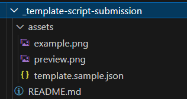

Preparing a submission
Thank you for considering contributing to this repository. In order to help you get started, we have prepared this guide to provide you with the information you need to prepare your submission.
Note
If you miss anything on your submission, please don't worry, we will check and make the tweaks to the submission for you, we may reach out within the Pull Request to check some details with you. We do not want to put you off contributing, we want to make it as easy as possible for you to contribute.
Where Do I Start?
First, you need to ensure you have a GitHub account. If you don't have one, you can create one for free. Then find the repository at https://github.com/pnp/script-samples and click the "Fork" button in the top right corner.
Before you can submit, you need to make sure you are setup with a "fork" of the repository in your own account, please navigate to Submitting Pull Requests for setup information.
Use a code tour
We have added a code tour to help you create a sample from the template. In order to use, this, you will need to install the extension into Visual Studio Code called "CodeTour", details of how this works, see CodeTour | Visual Studio Code Marketplace
Submission Template Files
There is a template submission folder called "_template-script-submission" in _template-script-submission | GitHub - PnP Script Samples.
The template submission folder contains:
- README.md - Sample Readme with the structure, remove the dummy text and update the areas for your submission
- assets/example.png - image for the sample, simply replace with a screenshot to show in the article
Note
If you would like an example, please refer to the following script: Generate Demo Events for SharePoint Events List | PnP Script Samples
Please note: this isn't an expected sample style, quality or format, or a gold standard just an idea if you feel you need some ideas on how to present your script.
We fully understand that there any multiple styles and approaches, and we are happy to accept the submission in your style 😊
Alternatively, you can use PowerShell...
We have added a PowerShell script to help you generate the scaffolding for a NEW sample, making it faster for you to submit. It does not add to an existing sample a new variation.
In the root of the repo, you will find New-Sample.ps1 this PowerShell script accepts the following parameters:
| Property | Example | Description |
|---|---|---|
| -ScriptFolderName | "spo-dev-tenant-report-export" | Folder format for the sample itself. Lowercase, workload prefix |
| -ScriptTitle | "Report and Export Solutions from M365 Developer Tenant" | Title of your sample script |
| -ScriptShortDescription | "Expiring tenant or need..." | Short Description of what the sample does |
| -ScriptTool | PnPPowerShell | Multiple options supported here e.g. 'PnPPowerShell','CliForMicrosoft365', 'SPOManagementShell', 'CliForMicrosoft365Bash', 'MicrosoftGraphPowerShell', 'AzureCli', 'PowerAppsPowerShell', 'MicrosoftTeamsPowerShell', 'All' |
| -AuthorFullName | "Paul Bullock" | Your name, so we can credit you |
| -GitHubId | "pkbullock" | Your GitHub handle |
Example:
.\New-Sample.ps1 -ScriptFolderName "spo-dev-tenant-report-export" `
-ScriptTitle "Report and Export Solutions from M365 Developer Tenant" `
-ScriptShortDescription "Expiring tenant or need to understand what you have created in the past, report and optionally export your projects and solutions"
-ScriptTool PnPPowerShell `
-AuthorFullName "Paul Bullock" `
-GitHubId "pkbullock"

Page Structure
The page follows a standard format, we have created a graphic to explain the layout and the markdown for each section:

The minimum we need for the submission is:
- Article Title - the title for your script
- Summary - for briefly describing what the script does
- Image, ideally named "example.png" in an assets folder, presenting the end result of the operation. The more visual the better.
- Script - minimum of at least one type. We support a wide range of script types, if this is not listed in the template file, we can add support for that type when you submit your PR.
- Contributors - your name, or if a joint submission those you have worked with - so that we can attribute credit for the submission.
We add the disclaimer statement at the bottom.
What is Markdown?
This repository uses a text based markup called "Markdown" which allows you to write articles/pages quickly without having to worry about the presentation of the page. Even this page is written using this - we use a site generator to turn this into a page automatically.
If you want to learn more about Markdown checkout this guide by Bob German on Tech Community - What's up with Markdown?
Key elements of Markdown we use
# Heading 1
## Heading 2
### Heading 3
| Table Header |
|--------------|
| Table Data |
[Hyperlink](https://bing.co.uk)

Tabs containing scripts
Each tab contains the sample for the scripts named under a specific tool. Use the following markdown to contain the script in the tab:
# [PnP PowerShell](#tab/pnpps)
``powershell
Your-PowerShellScript
``
# [CLI for Microsoft 365 using PowerShell](#tab/cli-m365-ps)
`` powershell
Your-PowerShellScript
``
# [CLI for Microsoft 365 using Bash](#tab/cli-m365-bash)
``bash
echo "your bash script"
``
# [Microsoft Graph PowerShell](#tab/graphps)
``powershell
Your-PowerShellScript
``
Note
- Use three backticks around the script, not the two shown above
- Delete the tabs you do not need
We add an additional block to provide guidance back to the tool guiding site:
[!INCLUDE [More about CLI for Microsoft 365](../../docfx/includes/MORE-CLIM365.md)]
Optional files
- assets/template.sample.json - this is a metadata file used for the gallery views, this is optional DO NOT HAVE TO COMPLETE THIS
- assets/preview.png - we generate a preview from the example.png file, you do not have to update this.
Folder Structure
We have worked to keep the folder structure lean and as simple as possible when submitting scripts:
+--- script-folder-title - *folder for the script based on the title of your sample, please all lowercase and spaces as hyphens*
|___ assets - *sub folder for any images or assets you need to support your sample*

Sample Naming and Structure Guidelines
When you are submitting a new sample, it has to follow up below guidelines
ReadMe File
You will need to have a README.md file for your contribution, which is based on the provided template under the scripts folder. Please copy this template to your project and update it accordingly. Your README.md must be named exactly README.md -- with capital letters -- as this is the information we use to make your sample public.
Please update the image source at the bottom of the template, the src attribute according with the repository name and folder information. For example, if your sample is named sampleA in the scripts folder, you should update the src attribute to https://m365-visitor-stats.azurewebsites.net/script-samples/scripts/sampleA
We use this for tracking your samples usage and popularity.
Screenshot (optional)
You will need to have a screenshot picture of your sample in action in the README.md file ("pics or it didn't happen"). The preview image must be located in the /assets/ folder in the root your you solution.
Sample Updates
You are free to submit updates to existing samples, if you find an issue or could benefit from improvements.
When you update existing samples, please update also README.md file accordingly with information on provided changes and with your author details
Sample Folder Naming
When submitting a new sample solution, please name the sample solution folder accordingly
Do not use words such as sample, script or ps in the folder or sample name
Do not use period/dot in the folder name of the provided sample
Remove environment or sensitive details
Please be sure to remove all of your password, usernames and tenant addresses from the sample scripts - this is to maintain the security of your tenant. Examples include replacing the organisation name with Contoso e.g. https://contoso.sharepoint.com giving the details of the type of address but hiding the key information.
Destructive scripts
We are happy to accept scripts that bulk delete or remove, delete an artefact but we will add a warning message to ensure that the reader is aware to ensure they understanding the implications of running the script.
e.g.
Warning
Please be aware this script contains a command that will remove or delete an artefact, ensure you test and understanding the implications of running the script.
We Track the Samples Usage
The README template contains a specific tracking image at the bottom of the file with an img tag, where the src attribute points to https://m365-visitor-stats.azurewebsites.net/script-samples/samples/readme-template. This is a transparent image which is used to track viewership of individual samples in GitHub.